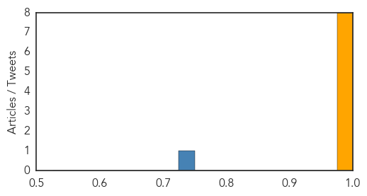

Swine Flu
30-Day Web Trend
0 alerts, 0 warnings

30-Day Twitter Trend
3 alerts, 0 warnings
Article Locations

Article Confidences
Top Articles:
- 1.000
- How the “Flu Blacklist” Explains Why the 2013-2014 Flu Season is Deadly « The Berkeley Blog
- 0.999
- Swine Flu claims Life of 38 People in Egypt
- 0.999
- Cases of H1N1 detected in Malaysia, Singapore, Thailand and Vietnam
- 0.997
- Egypt's Swine Flu Death Toll Reaches 38 — Naharnet
- 0.996
- Fear of swine flu returns in KuwaitHealthcare
- 0.995
- China’s surging bird flu – bring in the veterinarians
- 0.986
- A&M Research on Flu Will Change Government Response to Pandemics
- 0.982
- Young Adults and Obese are Vulnerable to H1N1 Flu
Top Tweets:
- 0.744
- RT: H1N1 flu is especially harsh for pregnant women. The flu shot safely protects these women from flu getafluvax! ad http://t.…
- 0.598
- RT: Canadian study finds flu vaccine working well against H1N1 http://t.co/Mn9TlvR7g7
Mumps
30-Day Web Trend
30 alerts, 0 warnings
30-Day Twitter Trend
0 alerts, 0 warnings

Article Locations

Article Confidences

Top Articles:
-
No articles found for Feb 10, 2014
Top Tweets:
-
No tweets found for Feb 10, 2014